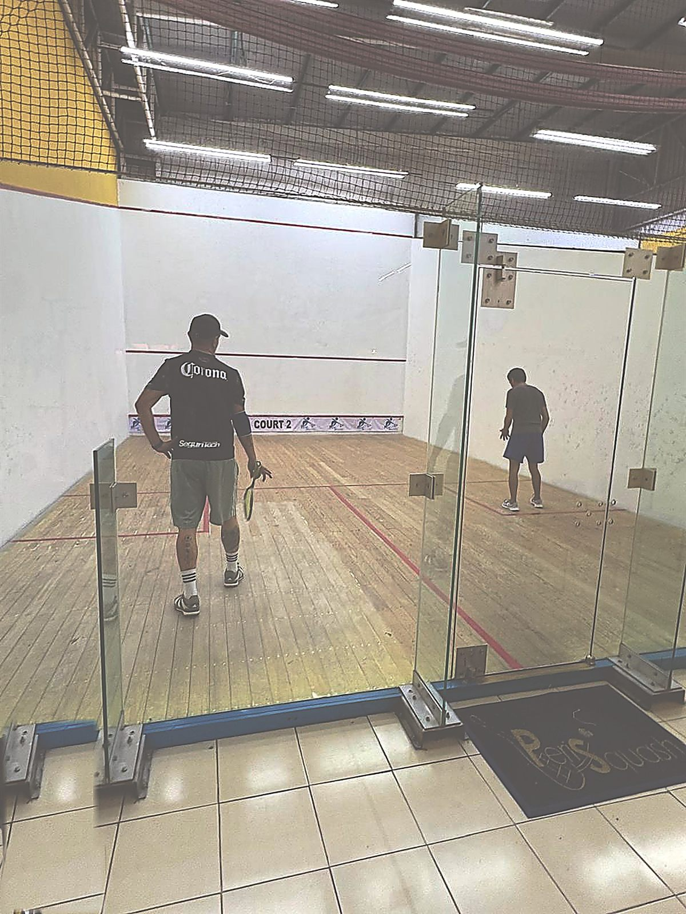
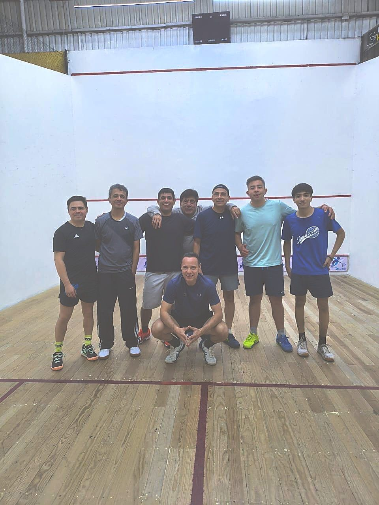
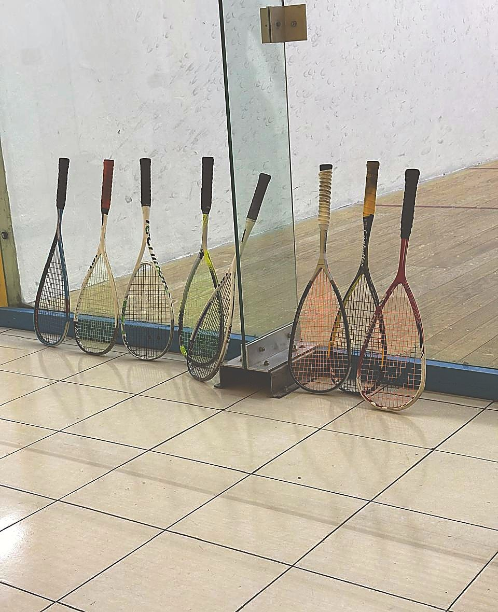
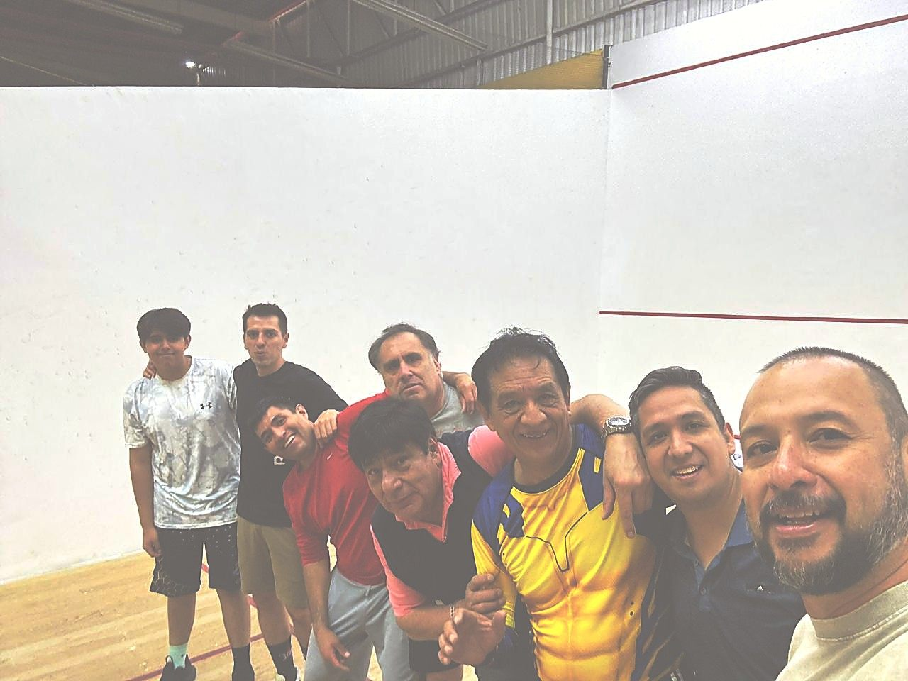
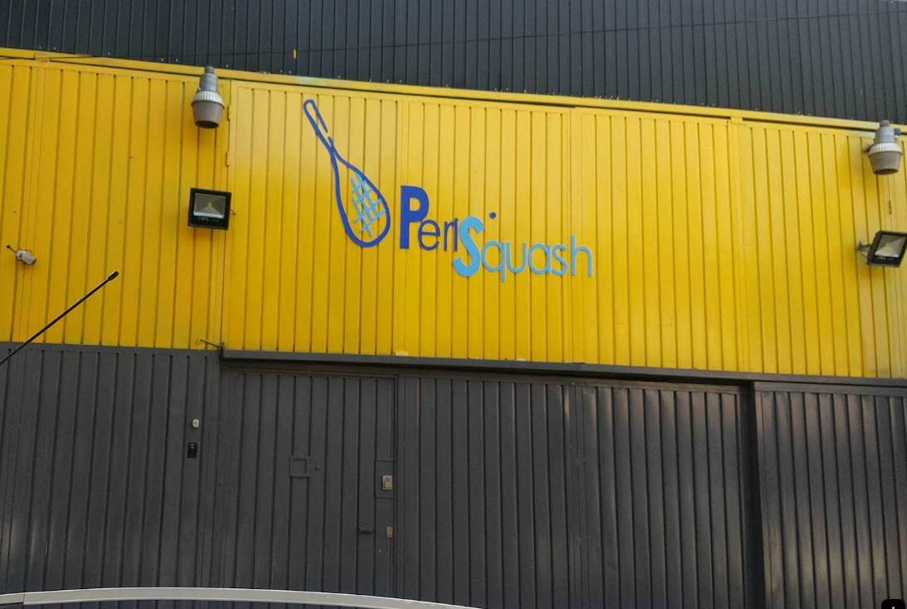

No es lujo — es squash bien hecho.
Piso de madera en excelentes condiciones, limpieza impecable y el trato de Don Roger, en la zona sur de la CDMX.
Espacios listos para jugar, entrenar y competir. Piso de madera con buen rebote, limpieza y un ambiente que la comunidad valora desde hace más de 13 años.




En Coapa, los squashistas conocen a Don Roger. Es el detalle que más se repite en las reseñas: atención cercana, instalaciones limpias y esas amenidades que hacen que quieras volver. No es un club de lujo — es uno donde te tratan bien.
"Las canchas están en excelentes condiciones, los baños muy limpios y Don Roger le agrega amenidades que le dan ese toque de comodidad que difícilmente ves en otro lado." — Reseña en Google
Baños y vestidores cuidados, como lo mencionan los jugadores.
Si vas empezando, te dan tips para mejorar tu partido.
Raquetas, pelotas y accesorios en el club por confirmar
Comunidad activa de jugadores y torneos locales.
Abrimos temprano y cerramos tarde para acomodarnos a tu rutina.
| Día | Horario |
|---|---|
| Lunes a Viernes | 6:30 AM — 11:00 PM |
| Sábado | 8:00 AM — 2:00 PM |
| Domingo | 7:00 AM — 3:00 PM |
Elige cancha, día y hora. Te armamos un mensaje de WhatsApp para Don Roger con tu solicitud. Él confirma la disponibilidad — no es un cobro en línea.
Se confirma por WhatsApp con Don Roger. No se cobra en línea.
Reseñas reales de Google. Sin filtro, sin editar.
"Las canchas tienen piso de duela y excelente servicio al cliente. Si eres principiante, te dan tips para mejorar."— Reseña en Google
"Gran lugar y excelente servicio de Roger. Las canchas están geniales y los baños de primera."— Reseña en Google
"Excelente lugar para practicar este deporte. Piso de duela, limpieza, servicio, grandes partidos. Todo en un solo lugar."— Reseña en Google
En Coapa, a unos pasos del Periférico Sur.

Vicente Guerrero 7, San Bartolo el Chico, Tlalpan, 14380, CDMX